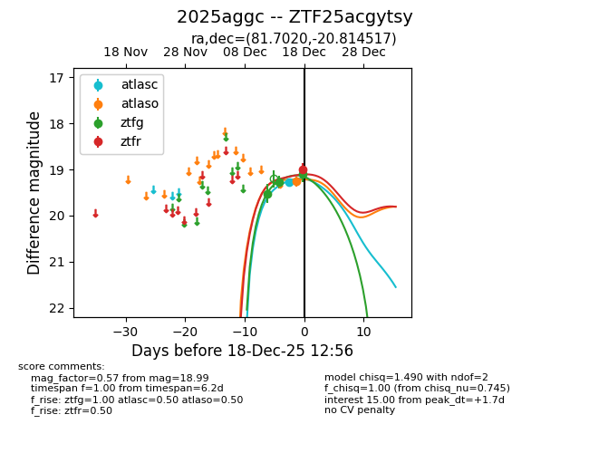
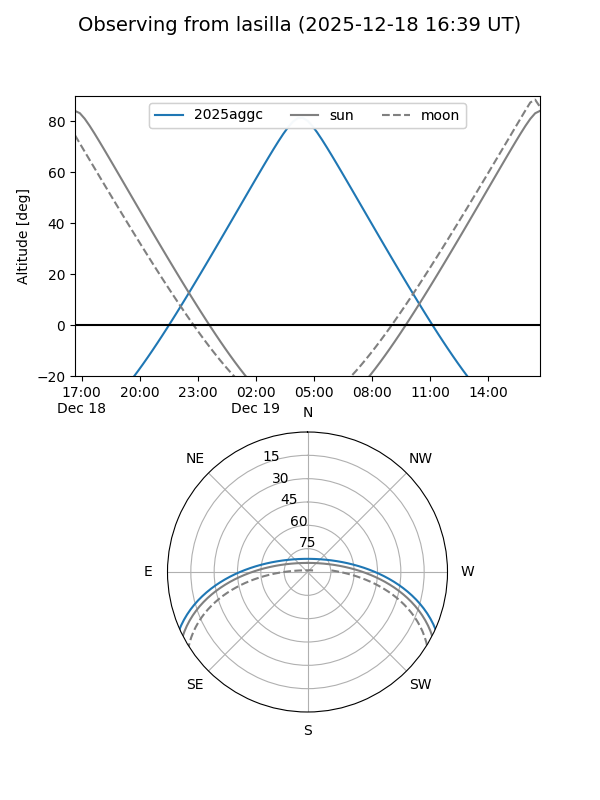
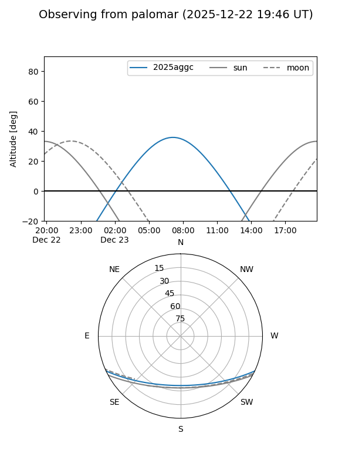
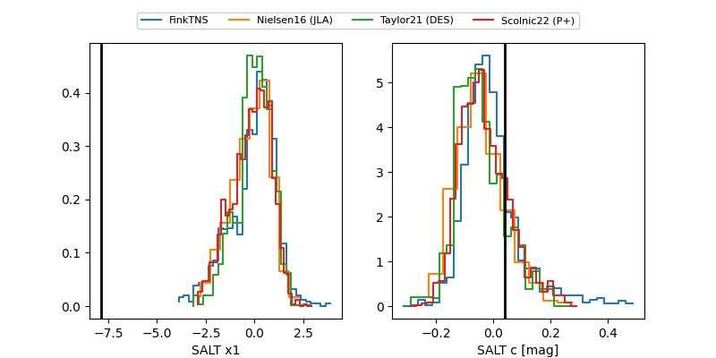

2025aggc
Target 2025aggc at 2025-12-20 13:04
Aliases and brokers:
FINK: fink-portal.org/ZTF25acgytsy
Lasair: lasair-ztf.lsst.ac.uk/objects/ZTF25acgytsy
ALeRCE: alerce.online/object/ZTF25acgytsy
TNS: wis-tns.org/object/2025aggc
YSE: ziggy.ucolick.org/yse/transient_detail/2025aggc
alt names
ZTF25acgytsy (ztf,fink_ztf)
2025aggc (tns,yse)
Coordinates:
equatorial (ra, dec) = 81.7020,-20.81452
equatorial (HMS+DMS) = 05:26:48.49,-20:48:52.26
galactic (l, b) = (223.4858,-27.53509)
Flags:
Photometry:
last atlasc=18.99, ztfg=19.10, ztfr=18.95
3 atlasc, 3 ztfg, 2 ztfr detections
Lightcurve

Visibility


Additional plots
